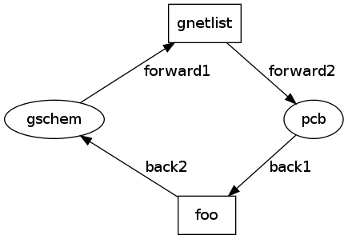
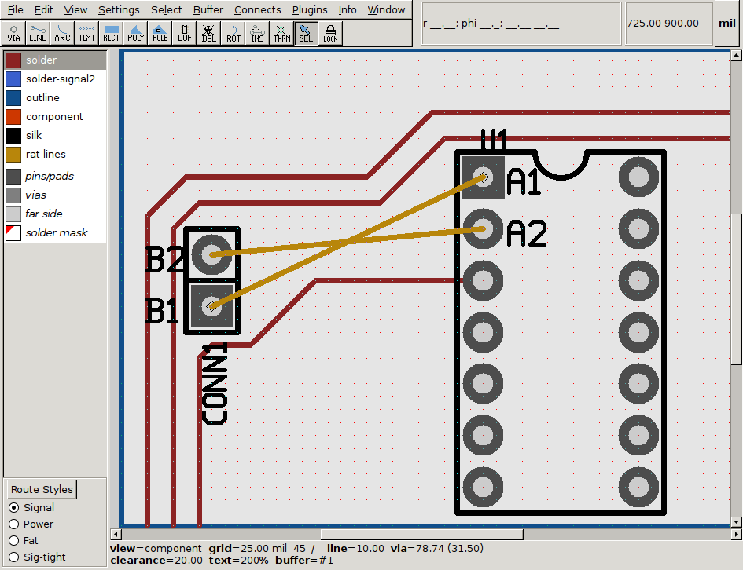
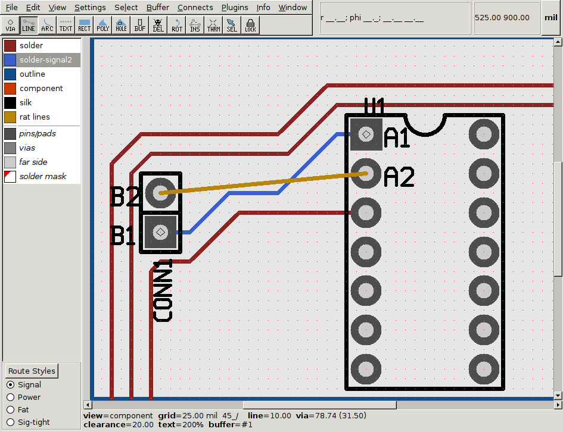
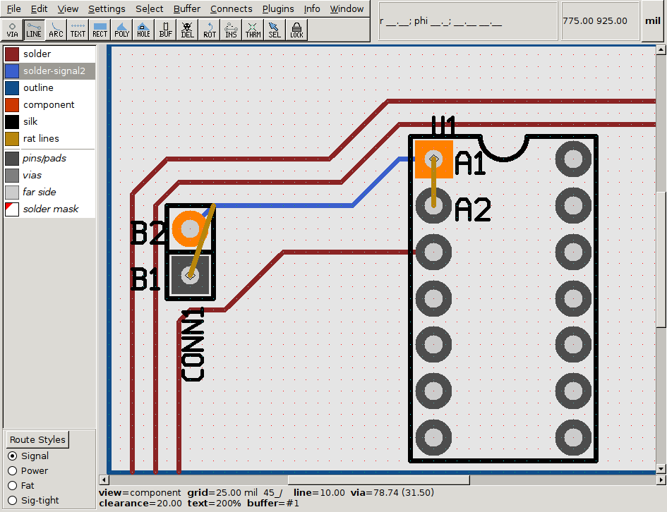
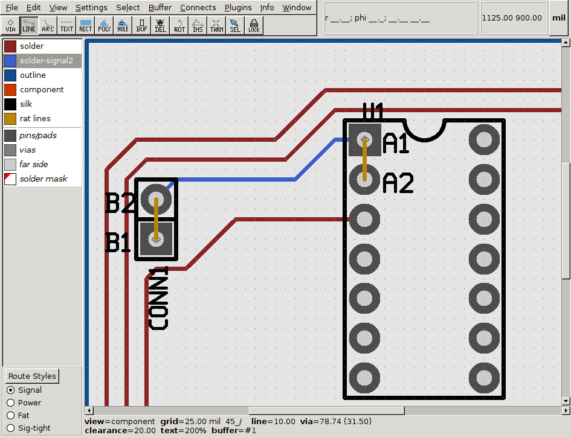
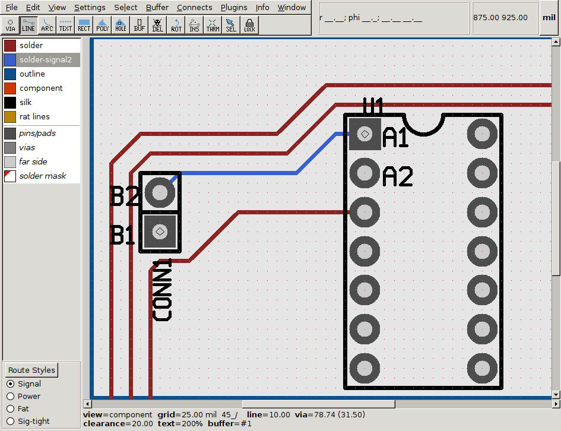
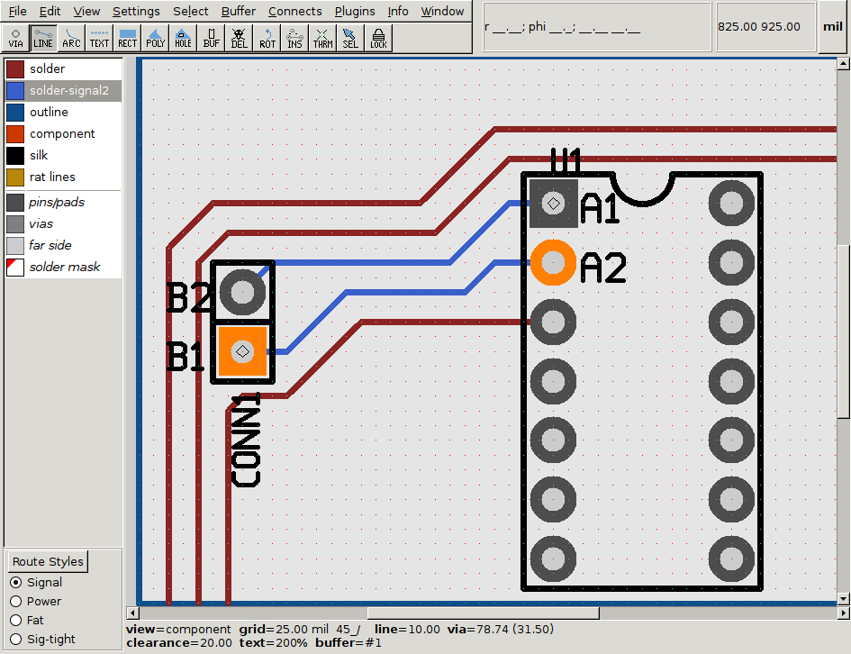
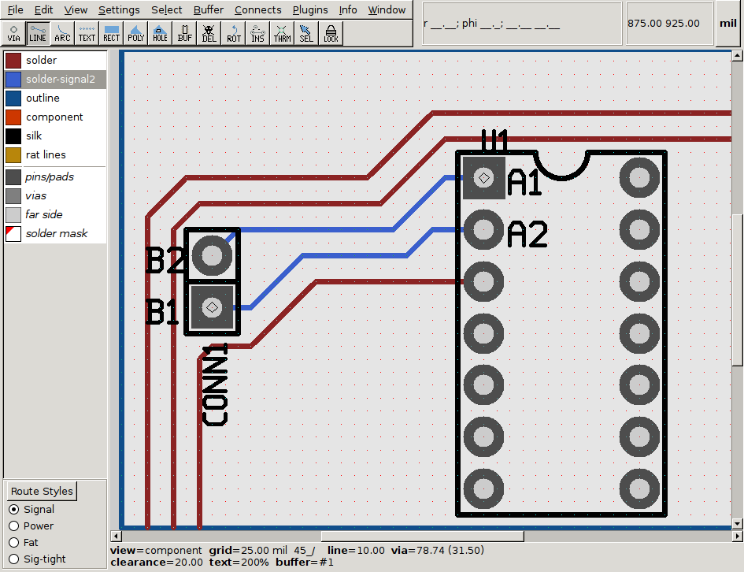

back annotation
netlists, annotations
Pcb-rnd (and mainline pcb) maintains a netlist as part of the design. Pcb
doesn't modify the netlist. The netlist is imported from an external source,
typically from gschem. This process is called forward annotation.
Sometimes there are a set of connections which contain pin pairs that could
be swapped. For example the data lines of an external parallel SRAM interface
to an MCU: it doesn't matter if data bit 1 at the MCU is wired to data bit
1 or 5 of the SRAM, as there is an 1:1 mapping and no one else is using the
same bus wires. In this case connections should be swapped during pcb routing
and annotated back to gschem so that the schematics can be updated. Both
paths are illustrated below.

Forward annotation passes on complete netlists along arrows forward1 and
forward2. Back annotation would pass back netlists, changes or modification
requests on the back1, back2 path. Gnetlist takes sch files to extract
and build a netlist in whatever format the receiver needs. There should be a
glue layer, called foo on the drawing, that does the reverse: receives
whatever format the sender has and generates something that gschem will
understand.
Support in pcb-rnd: core
Pcb-rnd gets a complete netlist. If the user could change the netlist directly,
there should be some sort of diff tool in foo that can explain the
changes to gschem, or a diff tool in gschem. What is worse, forward annotation
happens much more often than back annotation and pcb-rnd would need to be able
to merge a new netlist with local changes. The simple "gsch2pcb overwrites the
netlist in pcb from whatever gnetlist produced" approach would not work.
An alternative is to keep the netlist as-is, and maintain a separate list of
changes. The form proposed hereby is a table of "operation,net,pinID" or
"operation,net". Operation is one of "del_conn", "add_conn", "del_net" and
"add_net". The table is called the netlist patch.
For example assume two components with pins A1, A2 and B1, B2, with connections
n1=A1-B1 and n2=A2-B2. While routing the designer decides changing them to
n1=A1-B2 and n2=A2-B1 would be easier and is acceptable by the design. The
table of changes would contain this:
| op | net | pinID
|
|---|
| del_conn | n1 | B1
|
| del_conn | n2 | B2
|
| add_conn | n1 | B2
|
| add_conn | n2 | B1
|
The first two lines would remove pins B1 and B2 from n1 and n2. The last
two would put them back, swapped. New nets could be created or unused nets
could be removed using the add_net and del_net commands that have empty pinID.
The table is ordered, rows are strictly executed from top to bottom.
Pcb-rnd would store this table in memory. When some code calls the netlist
code to find out the members of a net, or which net a given pin is connected to,
after running the original netlist code, the result would be adjusted by the table.
The table would be normalized after operations. For example:
| op | net | pinID
|
|---|
| del_conn | n1 | B1
|
| add_conn | n2 | B1
|
| add_conn | n3 | B1
|
| del_conn | n2 | B1
|
would be reduced to
| op | net | pinID
|
|---|
| del_conn | n1 | B1
|
| add_conn | n3 | B1
|
Simple linear crawls on the table seems sufficient: it is expected that
pcb designers will make netlist modifications rarely and they will back
annotate them ASAP. In extreme cases there may be 64 bit wide bus systems that
need total reordering; even a 4 such reorders will introduce about 1024 items
on the list which seems not too big for O(1) algorithms. See section TODO
for better approaches.
Pcb-rnd would save the normalized table in the pcb file in a new section.
Upon a netlist change in pcb (import/load netlist or load the pcb), pcb-rnd
would check each row of the table: it is easy to decide whether that row
has been implemented in the netlist or not. Obsolete rows of the table would
be deleted.
A corner case is when B1 is removed from n1 and then added to n2 by the table,
while a new forward annotation removes B1 from n1 and adds it to n3. In this
case the first row of the table is deleted, as B1 is already removed from n1,
but pcb-rnd has no chance to decide if netlist adding B1 to n3 should affect
the table adding B1 to n2, so that rule is kept.
Support in pcb-rnd: GUI
A trivial idea is to extend the netlist window so that pins can be moved in
between nets or deleted or assigned to nets. Changes should be marked. This
is not the preferred way of editing the netlist, tho: not much more convenient
than making changes in gschem and doing forward annotation.
There should be a separate dialog box or a separate region of the netlist box
showing the netlist patch with edit capabilities.
Finally, the most important feature would be new actions resolving shorts.
Using the above example (n1=A1-B1 and n2=A2-B2 changed to n1=A1-B2 and n2=A2-B1),
I believe the user would:
| action | screenshot
|
|---|
| 
|
| | 
|
- then realize it's very hard to connect A2 to B2 while the previous connection is there
- he would then revert the first connection
- and connect A1 to B2
- which would cause shorts
| 
|
- then he would use the "approve netlist change" hotkey/action on the network;
this would add netlist patch commands for the A1-B2 connection,
but would also keep the A1-B1 connection, which remains a rat; because
of the new connection there'd be a rat between A1 and A2 or B1 and B2 too
(all 4 pins connected together on the patched netlist at the moment!)
| 
|
- the user would then use an action (maybe the same one?) on the rat line
so that pcb-rnd would understand that rat is not needed anymore and
would add a patch to remove the A1-B1 connection
- the same thing would need to happen to the A2-B2 rat
| 
|
- the user then would connect A2 to B1, which again is a short
| 
|
- the user would approve it as a new connection
- we have exactly 2 del_conn and 2 add_conn patches.
| 
|
An experienced user may think a few steps in advance and
chose to first remove the A1-B1 and A2-B2 rats and then create the A1-B2
and A2-B1 connections and then approve the two new connections.
An alternative is drag&drop ratline endpoint onto snap points; it may
be tricky to convert that to net/pin relations if a rat line is between two
line segments, tho.
These changes would live immediately, leaving the board free of shorts and
rats. There should be, however, some warning in the "congratulation" message
that tells the user a back annotation is still required.
Support in gschem
Ideally there should be a very small change in gschem and an optional
plugin script could do the rest. The plugin script would be in contant
with foo.
There are multiple ways pins can be connected to a net in gschem. It's
probably not a good idea to have too much automatism in the gschem's side,
trying to actually removing connections and adding new ones using the patch
(or whatever info foo converted the patch into).
However, gschem should support four things natively:
- it should have a concept of an unwanted pin-network connection; a connection
becomes unwanted only when the back annotation says so
- it should be able to mark unwanted connections on the active schematic page
- it should be able to tell the user if there are unwanted connections on
any of the pages open
- it should be able to refresh its idea of unwanted connections while
schematic pages are open
Displaying unwanted connections happen at:
- a pin of a component is connected to a net using a "blue line" net: mark the pin-net connection point
- a pin is directly connected to another pin, no net line in between: mark the connection point
- a pin is connected to a net using a pin attribute: mark the pin
- TODO: are there more?
TODO: there are a lot to think over about special cases related to
multipage schematics, hierarchies, slots, split symbols.
What foo does exactly
... is not clear yet. It depends on what sort of support gschem would provide.
Amendment 1: other parameters (1st sep)
I originally forgot to mention my other intentions in the above document:
back annotate non-netlist properites. It probably happened because netlist
related stuff are the hardest to solve.
There are other parameters that sometimes change during routing. A common case
for my 1 or 2 layer boards is when I originally intend to use 0603 parts but
during routing I figure I need to pass a trace between the pads. I need to
change the part to 0805 or 1206 (for two traces). I'd like to be able to
do this in-place in pcb with an action that replaces the footprint
but keeps the origin in place. This obviously still requires some manual
fiddling afterwards, but would remove the long, tedious chain I have now:
- 1. remember or note down which parts to change footprints for
- 2. go back to gschem and change them
- 3. get the changes in pcb (I use gsch2pcb and Makefiles, one step; the import menu is one step too, just another one)
- 4. disperse the new elements
- 5. find where they used to be
- 6. and then do the fiddling to fit them in
The new process would be:
- 1. get the footprint replaced, in-place; this would already approve the
change and there'd be a command for it in the patch table
- 2. do the fiddling to fit the new part in
- 3. do a back annotation
- (4. optionally, if we go for non-automatic change of attributes in gschem,
change them manually in gschem, cycling through the affected
items using some UI feature)
The same thing could work for values, which is the other attribute PCB also
sees. The same mechanism could work from other programs as well, e.g. tuning
the values of some parts in a simulator and then back annotating the changes
to the schematics. The patch table format foo handles would be in the
simplest plain text form.
Amendment 2: examples from gschem's point of view (3rd Sep)
netlist change
attribute change: footprint change
- The user creates the schematics and imports it in pcb; originally
U1 has an attribute footprint=DIP(8).
- during the layout the user figures using the footpritn SO(8) is
more appropriate. He does the change in pcb-rnd.
- pcb-rnd emits the following netlist patch for this:
change_attrib U1 footprint=DIP(8) footprint=SO(8)
(or it could be a del_attrib and add_attrib pair, like with connections)
- the user may need to load the netlist patch in ghscem
- In gschem there would be an indication that highlights any U1 instances
that has footprint=DIP(8)
- The user would find this indication and would resolve the situation
by whatever changes he finds appropriate (e.g. change the attribute)
- gschem would rerun the patch commands and would figure the change is
no longer requred and would remove the indication